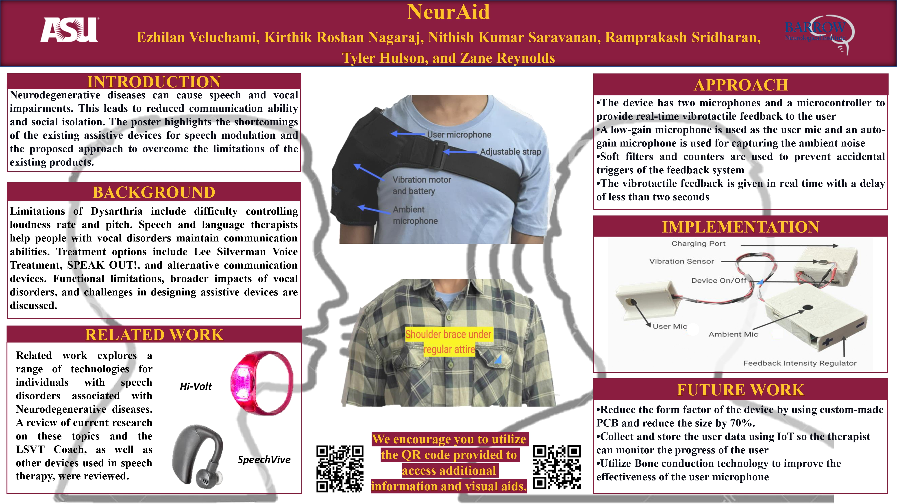

Biofeedback Device for People with Parkinson's Disease
January 2023 - April 2023
Arizona State University, Tempe, Arizona

INTRODUCTION
Parkinson's disease, a widespread neurodegenerative disorder, diminishes dopamine production, leading to various motor, cognitive, and psychological symptoms. Commonly, patients experience tremors, rigidity, and bradykinesia. Yet, speech and vocal impairments affect 89% of individuals, causing issues like hoarseness and reduced volume, impacting communication and social isolation. Speech therapy and baseline examinations aid communication preservation, but motor system issues, sensory processing, and volume control challenges contribute to speech problems. Beyond speech, Parkinson's brings a heightened risk of fractures, strokes, cancer, diabetes, and depression, with approximately one million cases in the U.S. annually, potentially more worldwide.
This project explores Parkinson's impact on speech and vocal abilities, strategies for communication preservation, and factors contributing to speech problems. We also discuss interventions to improve communication for those with Parkinson's, aiming to enhance their quality of life.
PROPOSED APPROACH
We propose a concealed vest model for our device, ensuring discreet integration on the vest's interior surface. The device's housing is designed for easy removal during washing, and the vest's lightweight material prevents discomfort from added weight.
The device components, including the vibrotactile feedback system, battery management system, battery, microphone, and controller, are positioned atop the collarbone. The collarbone microphone captures vocal intensity, while the vibrotactile sensor offers feedback accordingly.
Users can conveniently adjust settings through clothing, with accessible threshold and vibration strength buttons. The device housing accommodates various battery sizes and facilitates easy recharging. An additional microphone is available if needed. Our design prioritizes user-friendliness and minimal disturbance, offering vests in various sizes with adjustable straps for comfort and adaptability.
IMPLEMENTATION SECTION
The device comprises two microphones—one for user voice and another for ambient noise—controlled by a Qt Py RP 2040 microcontroller. User microphone gain is set low to capture nearby sounds and avoid ambient noise. Background noise is considered negligible but can be further reduced with a high-resolution bone conduction microphone positioned atop the collarbone. Auto-gain microphones for ambient noise adjust sensitivity based on distance.
The device initiates background noise capture upon activation and uses it to provide feedback on the user's voice level. Feedback logic defines three voice level states (high, normal, low) and two background noise states (noise, no noise). Feedback varies accordingly, providing continuous vibrotactile feedback for low user voice volume, continuous feedback for normal voice with background noise, and intermittent feedback for high user voice volume without ambient noise. No feedback is given for high user voice volume with background noise.
Microphone signals are sampled and filtered with a low-pass filter to avoid false triggers from high-frequency sounds or sudden signal changes.
CONCLUSION
Supervision during speech exercises enhances voice modulation for individuals with Neuro vocal disorders. Our device, more than an assistive tool, promotes self-regulation and user empowerment. We limit feedback stages to three to encourage device reliance and minimize user annoyance. The device's accuracy can be enhanced by employing a highly sensitive bone conduction microphone for the user and a high-gain microphone for ambient noise.
Check out the project here GitHub for code.
Click the Youtube logo for this project video.